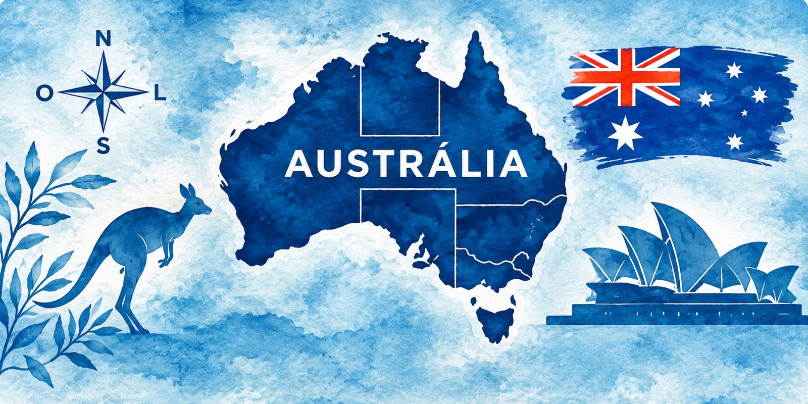

Animais únicos
A Austrália abriga animais muito especiais, como cangurus, coalas, wombats e ornitorrincos. Muitos deles são encontrados naturalmente apenas nessa região do planeta.

Capital: Canberra
Idioma: Inglês
Moeda: Dólar australiano
Continente: Oceania
A Austrália é um país de dimensões continentais, conhecido por sua diversidade natural, cidades modernas e praias de tirar o fôlego. É um destino que reúne aventura, cultura, história e experiências inesquecíveis.
Prepare-se para descobrir algumas das características mais surpreendentes desse país!
A Austrália abriga animais muito especiais, como cangurus, coalas, wombats e ornitorrincos. Muitos deles são encontrados naturalmente apenas nessa região do planeta.

Os povos aborígenes e os povos das Ilhas do Estreito de Torres possuem culturas, conhecimentos e tradições milenares, que fazem parte da história australiana.

A Grande Barreira de Corais é o maior sistema de recifes de coral do mundo, com uma enorme diversidade de espécies marinhas.

A Austrália possui mais de 600 parques nacionais, com paisagens impressionantes, florestas, cachoeiras, montanhas e trilhas para quem ama explorar a natureza.

O litoral australiano oferece praias incríveis, águas cristalinas e excelentes oportunidades para surfar, mergulhar ou simplesmente relaxar.

Em regiões afastadas das grandes cidades, é possível observar céus estrelados impressionantes e contemplar a Via Láctea em noites de boas condições.

A Austrália é o sexto maior país do mundo em extensão territorial. Seu tamanho permite encontrar diferentes paisagens, desde florestas até regiões desérticas.

Sydney, Melbourne e outras cidades australianas reúnem pessoas de diferentes partes do mundo, criando uma mistura fascinante de culturas, idiomas e gastronomias.
De praias paradisíacas a paisagens naturais impressionantes, a Austrália tem lugares que merecem estar na sua lista de próximas viagens.

Um dos cartões-postais mais famosos do mundo. Sua arquitetura impressionante fica às margens do belo porto de Sydney.

Uma das praias mais conhecidas da Austrália. É perfeita para quem gosta de surfe, caminhadas e paisagens à beira-mar.
Uma gigantesca formação rochosa no coração do país, considerada sagrada por povos aborígenes e famosa por suas cores durante o nascer e o pôr do sol.
Um destino extraordinário para mergulho e observação da vida marinha, com corais e paisagens subaquáticas impressionantes.

Uma estrada costeira famosa por suas falésias, praias e paisagens naturais. Um passeio inesquecível para quem gosta de explorar.
Uma região montanhosa no sudeste da Austrália, famosa por suas paisagens cobertas de neve no inverno. É um destino perfeito para esquiar, praticar snowboard e aproveitar o clima das montanhas.
Uma região de montanhas, florestas e cachoeiras, famosa por suas paisagens naturais e trilhas. É um destino incrível para quem gosta de aventura.
Um parque conhecido por sua biodiversidade, cachoeiras, áreas alagadas e importantes registros de arte rupestre dos povos indígenas australianos.
Cadastre-se e descubra o que as pessoas responderam sobre a Austrália. Veja os resultados da pesquisa!
Quero ver os resultados!